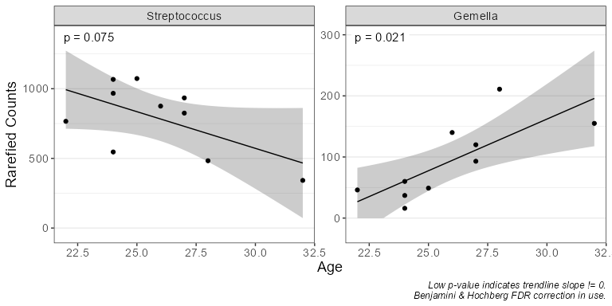

rbiom is designed for microbiome researchers, providing visualizations and statistical analyses from Biological Observation Matrix (BIOM) files.
Installation
The latest stable version can be installed from CRAN.
install.packages('rbiom')The development version is available on GitHub.
install.packages('pak')
pak::pak('cmmr/rbiom')Usage
Import and rarefy abundance counts.
library(rbiom)
infile <- system.file(package = 'rbiom', 'extdata', 'hmp50.bz2')
biom <- rarefy(infile)Explore associations with metadata.
bdiv_ord_plot(biom, stat.by = 'Body Site', facet.by = 'Sex')
adiv_boxplot(biom, x = 'Sex', adiv = c('otu', 'shan'), stat.by = 'Body Site')
subset(biom, `Body Site` == 'Buccal mucosa') %>%
taxa_corrplot('Age', taxa = 2, layers = 'ptc', fit = 'lm', test = 'emtrends')
Summarize counts by taxonomic rank.
taxa_heatmap(biom, taxa = 10, tracks = c('body', 'age'))
taxa_stacked(biom, rank = 'Phylum')
taxa_table(biom, 'Phylum')
#> # A tibble: 294 × 8
#> .rank .sample .taxa .abundance Age BMI `Body Site` Sex
#> <fct> <chr> <fct> <dbl> <dbl> <dbl> <fct> <fct>
#> 1 Phylum HMP01 Firmicutes 856 22 20 Buccal mucosa Female
#> 2 Phylum HMP01 Bacteroidetes 199 22 20 Buccal mucosa Female
#> 3 Phylum HMP01 Actinobacteria 16 22 20 Buccal mucosa Female
#> 4 Phylum HMP01 Proteobacteria 72 22 20 Buccal mucosa Female
#> 5 Phylum HMP01 Fusobacteria 32 22 20 Buccal mucosa Female
#> 6 Phylum HMP01 Tenericutes 0 22 20 Buccal mucosa Female
#> 7 Phylum HMP02 Firmicutes 803 24 23 Buccal mucosa Male
#> 8 Phylum HMP02 Bacteroidetes 192 24 23 Buccal mucosa Male
#> 9 Phylum HMP02 Actinobacteria 52 24 23 Buccal mucosa Male
#> 10 Phylum HMP02 Proteobacteria 96 24 23 Buccal mucosa Male
#> # ℹ 284 more rowsDocumentation
The online manual for rbiom is available at https://cmmr.github.io/rbiom/. It includes a getting started guide, articles that explore specific use cases, and reference pages for each function.
Community guidelines
Support
Bug reports, feature requests, and general questions can be submitted at https://github.com/cmmr/rbiom/issues.
Automated tests
The following commands will check if rbiom passes the bundled testing suite.
install.packages('testthat')
testthat::test_check('rbiom')